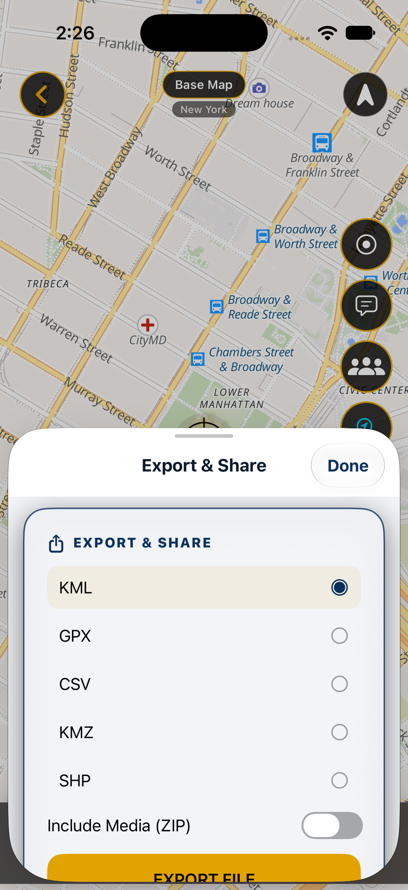

Dari QGIS ke MapNero
Ekspor layer kecil yang memakai jenis geometri, sistem koordinat, dan kolom yang Anda perlukan. Impor file di HP, lalu cek posisi titik. Buka kembali layer untuk memastikan data tersimpan.
PANDUAN LAPANGAN MAPNERO
Coba impor satu layer kecil ke MapNero. Periksa posisi dan atributnya sebelum memindahkan data lapangan Anda.

Ketiga file berisi titik fiktif yang sama dalam EPSG:4326 (WGS 84). Pilih satu format, lalu cocokkan koordinat dan atribut setelah impor.
GeoJSON dapat diimpor dengan paket gratis. Impor GeoPackage dan Shapefile memerlukan paket Core atau lebih tinggi. Impor Shapefile langsung dari ZIP agar semua file penyusunnya tetap bersama.
| Nama | Bujur (°) | Lintang (°) |
|---|---|---|
| Reference A | 30,000 | 0,000 |
| Reference B | 30,001 | 0,001 |
| Reference Ç | 30,002 | 0,000 |
Periksa kolom ref_id, name, status, dan notes. File contoh diekspor dengan QGIS 3.44.15 dan diperiksa pada versi uji MapNero untuk Android.
Ekspor layer kecil yang memakai jenis geometri, sistem koordinat, dan kolom yang Anda perlukan. Impor file di HP, lalu cek posisi titik. Buka kembali layer untuk memastikan data tersimpan.
Ekspor layer dalam format yang didukung, lalu buka hasilnya di proyek uji QGIS. Cocokkan jumlah fitur, koordinat, dan atribut. Periksa gaya dan lampiran secara terpisah. Simpan proyek dan file asli.